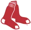

Historical player · LF
Mounce High Minors
- Nickname (as stored)
- Tony
- Position
- LF
- Bats/Throws
- R/L
- Born
- Aug 1, 2
- Major-league seasons
- 1937–1943 (5)
- Main franchise
 San Francisco Seals
San Francisco Seals- Status
- Retired
| Year | Team | Lg | G | PA | AB | R | H | 2B | 3B | HR | RBI | SB | CS | BB | K | AVG | OBP | SLG | OPS | WAR |
|---|---|---|---|---|---|---|---|---|---|---|---|---|---|---|---|---|---|---|---|---|
| 1937 |  Philadelphia Athletics Philadelphia Athletics | AL | 14 | 38 | 36 | 10 | 14 | 2 | 0 | 2 | 9 | 1 | 0 | 2 | 6 | .389 | .421 | .611 | 1.032 | 0.5 |
| 1938 | Philadelphia Athletics | AL | 9 | 33 | 30 | 4 | 4 | 0 | 0 | 0 | 2 | 0 | 0 | 3 | 5 | .133 | .212 | .133 | .345 | -0.3 |
| 1941 | New York Giants | NL | 10 | 45 | 42 | 5 | 9 | 3 | 0 | 1 | 5 | 0 | 0 | 2 | 6 | .214 | .250 | .357 | .607 | 0.0 |
| 1942 | New York Giants | NL | 104 | 372 | 331 | 39 | 85 | 8 | 7 | 6 | 58 | 3 | 4 | 38 | 48 | .257 | .332 | .378 | .709 | 1.6 |
| 1943 | New York Giants | NL | 40 | 130 | 113 | 11 | 23 | 5 | 1 | 1 | 12 | 3 | 2 | 16 | 9 | .204 | .302 | .292 | .594 | 0.0 |
| 1943 |  Boston Red Sox | AL | 30 | 127 | 112 | 19 | 19 | 4 | 1 | 2 | 10 | 2 | 1 | 15 | 24 | .170 | .268 | .277 | .545 | -0.1 |
| 1943 total | 70 | 257 | 225 | 30 | 42 | 9 | 2 | 3 | 22 | 5 | 3 | 31 | 33 | .187 | .285 | .284 | .570 | 0.0 | ||
| Career | 5 seasons | 207 | 745 | 664 | 88 | 154 | 22 | 9 | 12 | 96 | 9 | 7 | 76 | 98 | .232 | .310 | .346 | .656 | 1.6 |
| Year | Team | Pos | G | GS | Inn | TC | PO | A | E | DP | Fld% |
|---|---|---|---|---|---|---|---|---|---|---|---|
| 1937 | Philadelphia Athletics | 1B | 1 | 0 | 6.0 | 11 | 9 | 2 | 0 | 3 | 1.000 |
| 1937 | Philadelphia Athletics | LF | 9 | 8 | 61.0 | 10 | 8 | 0 | 2 | 0 | .800 |
| 1938 | Philadelphia Athletics | LF | 4 | 4 | 33.2 | 8 | 6 | 1 | 1 | 0 | .875 |
| 1938 | Philadelphia Athletics | RF | 3 | 3 | 24.1 | 4 | 4 | 0 | 0 | 0 | 1.000 |
| 1941 | New York Giants | LF | 2 | 2 | 16.1 | 4 | 4 | 0 | 0 | 0 | 1.000 |
| 1941 | New York Giants | RF | 9 | 9 | 72.2 | 14 | 12 | 2 | 0 | 1 | 1.000 |
| 1942 | New York Giants | LF | 91 | 91 | 729.1 | 174 | 167 | 4 | 3 | 0 | .983 |
| 1942 | New York Giants | RF | 1 | 1 | 8.2 | 2 | 2 | 0 | 0 | 0 | 1.000 |
| 1943 | Boston Red Sox | LF | 33 | 33 | 267.0 | 50 | 44 | 3 | 3 | 1 | .940 |
| 1943 | New York Giants | LF | 33 | 33 | 262.0 | 61 | 58 | 2 | 1 | 0 | .984 |
| Career | LF | 172 | 171 | 1369.1 | 307 | 287 | 10 | 10 | 1 | .967 | |
| Career | RF | 13 | 13 | 105.2 | 20 | 18 | 2 | 0 | 1 | 1.000 | |
| Career | 1B | 1 | 0 | 6.0 | 11 | 9 | 2 | 0 | 3 | 1.000 |
League-leader finishes top 10; 0 times first
| Year | League | Category | Place | Value |
|---|---|---|---|---|
| 1942 | NL | Triples | 5th | 7 |
Seasons before 2002 are real MLB history from the OOTP export, mapped by OOTP onto this league's 30 original franchises (club names are as they were in that season). 2002 is this universe. Player names are as the export stores them (apart from a few renamed in this universe since this dump, such as Babe Ruth): OOTP gives some historical players generated names (the 586-homer career is filed under “Legendre Robinson”), and the site keeps them. Every player links to a page: 2002 players to their season pages, everyone else to a historical career page.